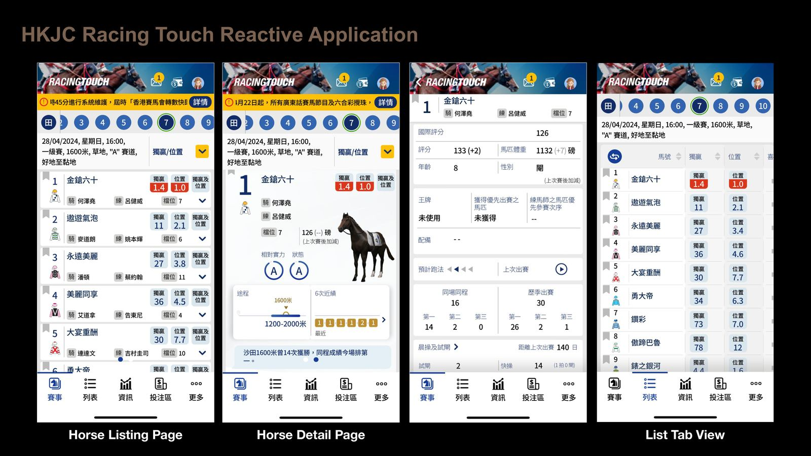

Racing Touch
One-stop interactive racing app uniting comprehensive racing info, live streaming and instant betting. Graphically-rich UI with 3D horses and gamification — plus FPS money transfer, bet submission, speedmap, horse selector and track analyst.
View project →